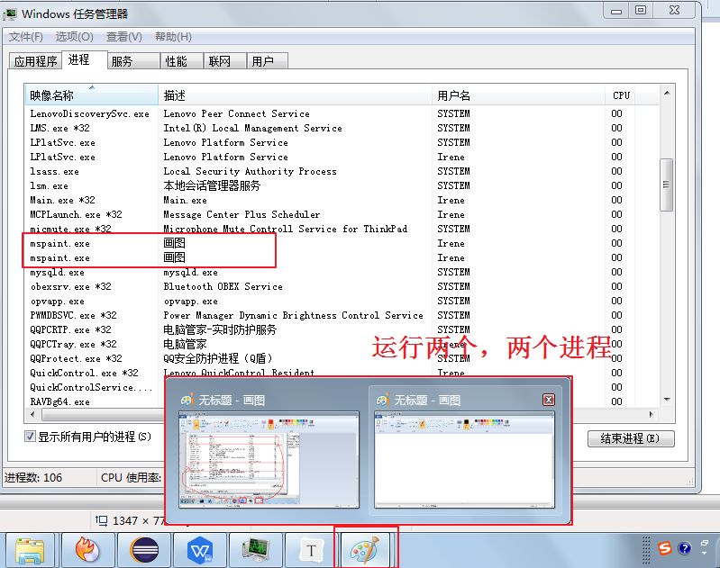
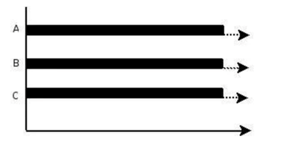

第10章_多线程
本章专题与脉络

我们之前学习的程序在没有跳转语句的情况下，都是由上至下沿着一条路径依次执行。现在想要设计一个程序，可以同时有多条执行路径同时执行。比如，一边游戏，一边qq聊天，一边听歌，怎么设计？
要解决上述问题，需要使用多进程或者多线程来解决。
1. 相关概念
1.1 程序、进程与线程
程序（program）：为完成特定任务，用某种语言编写的
一组指令的集合。即指一段静态的代码，静态对象。进程（process）：程序的一次执行过程，或是正在内存中运行的应用程序。如：运行中的QQ，运行中的网易音乐播放器。
- 每个进程都有一个独立的内存空间，系统运行一个程序即是一个进程从创建、运行到消亡的过程。（生命周期）
- 程序是静态的，进程是动态的
- 进程作为
操作系统调度和分配资源的最小单位（亦是系统运行程序的基本单位），系统在运行时会为每个进程分配不同的内存区域。 - 现代的操作系统，大都是支持多进程的，支持同时运行多个程序。比如：现在我们上课一边使用编辑器，一边使用录屏软件，同时还开着画图板，dos窗口等软件。
线程（thread）：进程可进一步细化为线程，是程序内部的
一条执行路径。一个进程中至少有一个线程。一个进程同一时间若
并行执行多个线程，就是支持多线程的。线程作为
CPU调度和执行的最小单位。一个进程中的多个线程共享相同的内存单元，它们从同一个堆中分配对象，可以访问相同的变量和对象。这就使得线程间通信更简便、高效。但多个线程操作共享的系统资源可能就会带来
安全的隐患。下图中，红框的蓝色区域为线程独享，黄色区域为线程共享。

注意：
不同的进程之间是不共享内存的。
进程之间的数据交换和通信的成本很高。
1.2 查看进程和线程
我们可以在电脑底部任务栏，右键—–>打开任务管理器，可以查看当前任务的进程：
1、每个应用程序的运行都是一个进程

2、一个应用程序的多次运行，就是多个进程
3、一个进程中包含多个线程
1.3 线程调度
分时调度
所有线程
轮流使用CPU 的使用权，并且平均分配每个线程占用 CPU 的时间。抢占式调度
让
优先级高的线程以较大的概率优先使用 CPU。如果线程的优先级相同，那么会随机选择一个(线程随机性)，Java使用的为抢占式调度。
1.4 多线程程序的优点
背景：以单核CPU为例，只使用单个线程先后完成多个任务（调用多个方法），肯定比用多个线程来完成用的时间更短，为何仍需多线程呢？
多线程程序的优点：
提高应用程序的响应。对图形化界面更有意义，可增强用户体验。
提高计算机系统CPU的利用率
改善程序结构。将既长又复杂的进程分为多个线程，独立运行，利于理解和修改
1.5 补充概念
1.5.1 单核CPU和多核CPU
单核CPU，在一个时间单元内，只能执行一个线程的任务。例如，可以把CPU看成是医院的医生诊室，在一定时间内只能给一个病人诊断治疗。所以单核CPU就是，代码经过前面一系列的前导操作（类似于医院挂号，比如有10个窗口挂号），然后到cpu处执行时发现，就只有一个CPU（对应一个医生），大家排队执行。
这时候想要提升系统性能，只有两个办法，要么提升CPU性能（让医生看病快点），要么多加几个CPU（多整几个医生），即为多核的CPU。
问题：多核的效率是单核的倍数吗？譬如4核A53的cpu，性能是单核A53的4倍吗？理论上是，但是实际不可能，至少有两方面的损耗。
一个是多个核心的其他共用资源限制。譬如，4核CPU对应的内存、cache、寄存器并没有同步扩充4倍。这就好像医院一样，1个医生换4个医生，但是做B超检查的还是一台机器，性能瓶颈就从医生转到B超检查了。另一个是多核CPU之间的协调管理损耗。譬如多个核心同时运行两个相关的任务，需要考虑任务同步，这也需要消耗额外性能。好比公司工作，一个人的时候至少不用开会浪费时间，自己跟自己商量就行了。两个人就要开会同步工作，协调分配，所以工作效率绝对不可能达到2倍。
1.5.2 并行与并发
并行（parallel）：指两个或多个事件在
同一时刻发生（同时发生）。指在同一时刻，有多条指令在多个CPU上同时执行。比如：多个人同时做不同的事。

并发（concurrency）：指两个或多个事件在
同一个时间段内发生。即在一段时间内，有多条指令在单个CPU上快速轮换、交替执行，使得在宏观上具有多个进程同时执行的效果。

在操作系统中，启动了多个程序，并发指的是在一段时间内宏观上有多个程序同时运行，这在单核 CPU 系统中，每一时刻只能有一个程序执行，即微观上这些程序是分时的交替运行，只不过是给人的感觉是同时运行，那是因为分时交替运行的时间是非常短的。
而在多核 CPU 系统中，则这些可以并发执行的程序便可以分配到多个CPU上，实现多任务并行执行，即利用每个处理器来处理一个可以并发执行的程序，这样多个程序便可以同时执行。目前电脑市场上说的多核 CPU，便是多核处理器，核越多，并行处理的程序越多，能大大的提高电脑运行的效率。
2.创建和启动线程
2.1 概述
Java语言的JVM允许程序运行多个线程，使用
java.lang.Thread类代表线程，所有的线程对象都必须是Thread类或其子类的实例。Thread类的特性
- 每个线程都是通过某个特定Thread对象的run()方法来完成操作的，因此把run()方法体称为
线程执行体。 - 通过该Thread对象的start()方法来启动这个线程，而非直接调用run()
- 要想实现多线程，必须在主线程中创建新的线程对象。
- 每个线程都是通过某个特定Thread对象的run()方法来完成操作的，因此把run()方法体称为
2.2 方式1：继承Thread类
Java通过继承Thread类来创建并启动多线程的步骤如下：
- 定义Thread类的子类，并重写该类的run()方法，该run()方法的方法体就代表了线程需要完成的任务
- 创建Thread子类的实例，即创建了线程对象
- 调用线程对象的start()方法来启动该线程
代码如下：
package com.atguigu.thread;
//自定义线程类
public class MyThread extends Thread {
//定义指定线程名称的构造方法
public MyThread(String name) {
//调用父类的String参数的构造方法，指定线程的名称
super(name);
}
/**
* 重写run方法，完成该线程执行的逻辑
*/
@Override
public void run() {
for (int i = 0; i < 10; i++) {
System.out.println(getName()+"：正在执行！"+i);
}
}
}测试类：
package com.atguigu.thread;
public class TestMyThread {
public static void main(String[] args) {
//创建自定义线程对象1
MyThread mt1 = new MyThread("子线程1");
//开启子线程1
mt1.start();
//创建自定义线程对象2
MyThread mt2 = new MyThread("子线程2");
//开启子线程2
mt2.start();
//在主方法中执行for循环
for (int i = 0; i < 10; i++) {
System.out.println("main线程！"+i);
}
}
}

注意：
如果自己手动调用run()方法，那么就只是普通方法，没有启动多线程模式。
run()方法由JVM调用，什么时候调用，执行的过程控制都有操作系统的CPU调度决定。
想要启动多线程，必须调用start方法。
一个线程对象只能调用一次start()方法启动，如果重复调用了，则将抛出以上的异常“
IllegalThreadStateException”。
2.3 方式2：实现Runnable接口
Java有单继承的限制，当我们无法继承Thread类时，那么该如何做呢？在核心类库中提供了Runnable接口，我们可以实现Runnable接口，重写run()方法，然后再通过Thread类的对象代理启动和执行我们的线程体run()方法
步骤如下：
定义Runnable接口的实现类，并重写该接口的run()方法，该run()方法的方法体同样是该线程的线程执行体。
创建Runnable实现类的实例，并以此实例作为Thread的target参数来创建Thread对象，该Thread对象才是真正
的线程对象。调用线程对象的start()方法，启动线程。调用Runnable接口实现类的run方法。
代码如下：
package com.atguigu.thread;
public class MyRunnable implements Runnable {
@Override
public void run() {
for (int i = 0; i < 20; i++) {
System.out.println(Thread.currentThread().getName() + " " + i);
}
}
}测试类：
package com.atguigu.thread;
public class TestMyRunnable {
public static void main(String[] args) {
//创建自定义类对象 线程任务对象
MyRunnable mr = new MyRunnable();
//创建线程对象
Thread t = new Thread(mr, "长江");
t.start();
for (int i = 0; i < 20; i++) {
System.out.println("黄河 " + i);
}
}
}通过实现Runnable接口，使得该类有了多线程类的特征。所有的分线程要执行的代码都在run方法里面。
在启动的多线程的时候，需要先通过Thread类的构造方法Thread(Runnable target) 构造出对象，然后调用Thread对象的start()方法来运行多线程代码。
实际上，所有的多线程代码都是通过运行Thread的start()方法来运行的。因此，不管是继承Thread类还是实现
Runnable接口来实现多线程，最终还是通过Thread的对象的API来控制线程的，熟悉Thread类的API是进行多线程编程的基础。
说明：Runnable对象仅仅作为Thread对象的target，Runnable实现类里包含的run()方法仅作为线程执行体。
而实际的线程对象依然是Thread实例，只是该Thread线程负责执行其target的run()方法。

2.4 变形写法
使用匿名内部类对象来实现线程的创建和启动
// 继承Thread
new Thread("新的线程！"){
@Override
public void run() {
for (int i = 0; i < 10; i++) {
System.out.println(getName()+"：正在执行！"+i);
}
}
}.start();// 实现Runnable
new Thread(new Runnable(){
@Override
public void run() {
for (int i = 0; i < 10; i++) {
System.out.println(Thread.currentThread().getName()+"：" + i);
}
}
}).start();2.5 对比两种方式
联系
Thread类实际上也是实现了Runnable接口的类。即：
public class Thread extends Object implements Runnable区别
继承Thread：线程代码存放Thread子类run方法中。
实现Runnable：线程代码存在接口的子类的run方法。
实现Runnable接口比继承Thread类所具有的优势
- 避免了单继承的局限性
- 多个线程可以共享同一个接口实现类的对象，非常适合多个相同线程来处理同一份资源。
- 增加程序的健壮性，实现解耦操作，代码可以被多个线程共享，代码和线程独立。
2.6 练习
创建两个分线程，让其中一个线程输出1-100之间的偶数，另一个线程输出1-100之间的奇数。
3. Thread类的常用结构
3.1 构造器
- public Thread() :分配一个新的线程对象。
- public Thread(String name) :分配一个指定名字的新的线程对象。
- public Thread(Runnable target) :指定创建线程的目标对象，它实现了Runnable接口中的run方法
- public Thread(Runnable target,String name) :分配一个带有指定目标新的线程对象并指定名字。
3.2 常用方法系列1
- public void run() :此线程要执行的任务在此处定义代码。
- public void start() :导致此线程开始执行; Java虚拟机调用此线程的run方法。
- public String getName() :获取当前线程名称。
- public void setName(String name)：设置该线程名称。
- public static Thread currentThread() :返回对当前正在执行的线程对象的引用。在Thread子类中就是this，通常用于主线程和Runnable实现类
- public static void sleep(long millis) :使当前正在执行的线程以指定的毫秒数暂停（暂时停止执行）。
- public static void yield()：yield只是让当前线程暂停一下，让系统的线程调度器重新调度一次，希望优先级与当前线程相同或更高的其他线程能够获得执行机会，但是这个不能保证，完全有可能的情况是，当某个线程调用了yield方法暂停之后，线程调度器又将其调度出来重新执行。
3.3 常用方法系列2
public final boolean isAlive()：测试线程是否处于活动状态。如果线程已经启动且尚未终止，则为活动状态。
void join() ：等待该线程终止。
void join(long millis) ：等待该线程终止的时间最长为 millis 毫秒。如果millis时间到，将不再等待。
void join(long millis, int nanos) ：等待该线程终止的时间最长为 millis 毫秒 + nanos 纳秒。
public final void stop()：
已过时，不建议使用。强行结束一个线程的执行，直接进入死亡状态。run()即刻停止，可能会导致一些清理性的工作得不到完成，如文件，数据库等的关闭。同时，会立即释放该线程所持有的所有的锁，导致数据得不到同步的处理，出现数据不一致的问题。void suspend() / void resume() : 这两个操作就好比播放器的暂停和恢复。二者必须成对出现，否则非常容易发生死锁。suspend()调用会导致线程暂停，但不会释放任何锁资源，导致其它线程都无法访问被它占用的锁，直到调用resume()。
已过时，不建议使用。
3.4 常用方法系列3
每个线程都有一定的优先级，同优先级线程组成先进先出队列（先到先服务），使用分时调度策略。优先级高的线程采用抢占式策略，获得较多的执行机会。每个线程默认的优先级都与创建它的父线程具有相同的优先级。
- Thread类的三个优先级常量：
- MAX_PRIORITY（10）：最高优先级
- MIN _PRIORITY （1）：最低优先级
- NORM_PRIORITY （5）：普通优先级，默认情况下main线程具有普通优先级。
- public final int getPriority() ：返回线程优先级
- public final void setPriority(int newPriority) ：改变线程的优先级，范围在[1,10]之间。
练习：获取main线程对象的名称和优先级。
声明一个匿名内部类继承Thread类，重写run方法，在run方法中获取线程名称和优先级。设置该线程优先级为最高优先级并启动该线程。
public static void main(String[] args) {
Thread t = new Thread(){
public void run(){
System.out.println(getName() + "的优先级：" + getPriority());
}
};
t.setPriority(Thread.MAX_PRIORITY);
t.start();
System.out.println(Thread.currentThread().getName() +"的优先级：" + Thread.currentThread().getPriority());
}案例：
声明一个匿名内部类继承Thread类，重写run方法，实现打印[1,100]之间的偶数，要求每隔1秒打印1个偶数。
声明一个匿名内部类继承Thread类，重写run方法，实现打印[1,100]之间的奇数，
- 当打印到5时，让奇数线程暂停一下，再继续。
- 当打印到5时，让奇数线程停下来，让偶数线程执行完再打印。
package com.atguigu.api;
public class TestThreadStateChange {
public static void main(String[] args) {
Thread te = new Thread() {
@Override
public void run() {
for (int i = 2; i <= 100; i += 2) {
System.out.println("偶数线程：" + i);
try {
Thread.sleep(1000);
} catch (InterruptedException e) {
e.printStackTrace();
}
}
}
};
te.start();
Thread to = new Thread() {
@Override
public void run() {
for (int i = 1; i <= 100; i += 2) {
System.out.println("奇数线程：" + i);
if (i == 5) {
// Thread.yield();
try {
te.join();
} catch (InterruptedException e) {
e.printStackTrace();
}
}
}
}
};
to.start();
}
}生产实践中的趣事：

3.5 守护线程（了解）
有一种线程，它是在后台运行的，它的任务是为其他线程提供服务的，这种线程被称为“守护线程”。JVM的垃圾回收线程就是典型的守护线程。
守护线程有个特点，就是如果所有非守护线程都死亡，那么守护线程自动死亡。形象理解：兔死狗烹，鸟尽弓藏
调用setDaemon(true)方法可将指定线程设置为守护线程。必须在线程启动之前设置，否则会报IllegalThreadStateException异常。
调用isDaemon()可以判断线程是否是守护线程。
public class TestThread {
public static void main(String[] args) {
MyDaemon m = new MyDaemon();
m.setDaemon(true);
m.start();
for (int i = 1; i <= 100; i++) {
System.out.println("main:" + i);
}
}
}
class MyDaemon extends Thread {
public void run() {
while (true) {
System.out.println("我一直守护者你...");
try {
Thread.sleep(1);
} catch (InterruptedException e) {
e.printStackTrace();
}
}
}
}4. 多线程的生命周期
Java语言使用Thread类及其子类的对象来表示线程，在它的一个完整的生命周期中通常要经历如下一些状态：
4.1 JDK1.5之前：5种状态
线程的生命周期有五种状态：新建（New）、就绪（Runnable）、运行（Running）、阻塞（Blocked）、死亡（Dead）。CPU需要在多条线程之间切换，于是线程状态会多次在运行、阻塞、就绪之间切换。

1.新建
当一个Thread类或其子类的对象被声明并创建时，新生的线程对象处于新建状态。此时它和其他Java对象一样，仅仅由JVM为其分配了内存，并初始化了实例变量的值。此时的线程对象并没有任何线程的动态特征，程序也不会执行它的线程体run()。
2.就绪
但是当线程对象调用了start()方法之后，就不一样了，线程就从新建状态转为就绪状态。JVM会为其创建方法调用栈和程序计数器，当然，处于这个状态中的线程并没有开始运行，只是表示已具备了运行的条件，随时可以被调度。至于什么时候被调度，取决于JVM里线程调度器的调度。
注意：
程序只能对新建状态的线程调用start()，并且只能调用一次，如果对非新建状态的线程，如已启动的线程或已死亡的线程调用start()都会报错IllegalThreadStateException异常。
3.运行
如果处于就绪状态的线程获得了CPU资源时，开始执行run()方法的线程体代码，则该线程处于运行状态。如果计算机只有一个CPU核心，在任何时刻只有一个线程处于运行状态，如果计算机有多个核心，将会有多个线程并行(Parallel)执行。
当然，美好的时光总是短暂的，而且CPU讲究雨露均沾。对于抢占式策略的系统而言，系统会给每个可执行的线程一个小时间段来处理任务，当该时间用完，系统会剥夺该线程所占用的资源，让其回到就绪状态等待下一次被调度。此时其他线程将获得执行机会，而在选择下一个线程时，系统会适当考虑线程的优先级。
4.阻塞
当在运行过程中的线程遇到如下情况时，会让出 CPU 并临时中止自己的执行，进入阻塞状态：
- 线程调用了sleep()方法，主动放弃所占用的CPU资源；
- 线程试图获取一个同步监视器，但该同步监视器正被其他线程持有；
- 线程执行过程中，同步监视器调用了wait()，让它等待某个通知（notify）；
- 线程执行过程中，同步监视器调用了wait(time)
- 线程执行过程中，遇到了其他线程对象的加塞（join）；
- 线程被调用suspend方法被挂起（已过时，因为容易发生死锁）；
当前正在执行的线程被阻塞后，其他线程就有机会执行了。针对如上情况，当发生如下情况时会解除阻塞，让该线程重新进入就绪状态，等待线程调度器再次调度它：
- 线程的sleep()时间到；
- 线程成功获得了同步监视器；
- 线程等到了通知(notify)；
- 线程wait的时间到了
- 加塞的线程结束了；
- 被挂起的线程又被调用了resume恢复方法（已过时，因为容易发生死锁）；
5.死亡
线程会以以下三种方式之一结束，结束后的线程就处于死亡状态：
- run()方法执行完成，线程正常结束
- 线程执行过程中抛出了一个未捕获的异常（Exception）或错误（Error）
- 直接调用该线程的stop()来结束该线程（已过时）
4.2 JDK1.5及之后：6种状态
在java.lang.Thread.State的枚举类中这样定义：
public enum State {
NEW,
RUNNABLE,
BLOCKED,
WAITING,
TIMED_WAITING,
TERMINATED;
}NEW（新建）：线程刚被创建，但是并未启动。还没调用start方法。RUNNABLE（可运行）：这里没有区分就绪和运行状态。因为对于Java对象来说，只能标记为可运行，至于什么时候运行，不是JVM来控制的了，是OS来进行调度的，而且时间非常短暂，因此对于Java对象的状态来说，无法区分。Teminated（被终止）：表明此线程已经结束生命周期，终止运行。重点说明，根据Thread.State的定义，阻塞状态分为三种：
BLOCKED、WAITING、TIMED_WAITING。BLOCKED（锁阻塞）：在API中的介绍为：一个正在阻塞、等待一个监视器锁（锁对象）的线程处于这一状态。只有获得锁对象的线程才能有执行机会。- 比如，线程A与线程B代码中使用同一锁，如果线程A获取到锁，线程A进入到Runnable状态，那么线程B就进入到Blocked锁阻塞状态。
TIMED_WAITING（计时等待）：在API中的介绍为：一个正在限时等待另一个线程执行一个（唤醒）动作的线程处于这一状态。- 当前线程执行过程中遇到Thread类的
sleep或join，Object类的wait，LockSupport类的park方法，并且在调用这些方法时，设置了时间，那么当前线程会进入TIMED_WAITING，直到时间到，或被中断。
- 当前线程执行过程中遇到Thread类的
WAITING（无限等待）：在API中介绍为：一个正在无限期等待另一个线程执行一个特别的（唤醒）动作的线程处于这一状态。- 当前线程执行过程中遇到遇到Object类的
wait，Thread类的join，LockSupport类的park方法，并且在调用这些方法时，没有指定时间，那么当前线程会进入WAITING状态，直到被唤醒。- 通过Object类的wait进入WAITING状态的要有Object的notify/notifyAll唤醒；
- 通过Condition的await进入WAITING状态的要有Condition的signal方法唤醒；
- 通过LockSupport类的park方法进入WAITING状态的要有LockSupport类的unpark方法唤醒
- 通过Thread类的join进入WAITING状态，只有调用join方法的线程对象结束才能让当前线程恢复；
- 当前线程执行过程中遇到遇到Object类的
说明：当从WAITING或TIMED_WAITING恢复到Runnable状态时，如果发现当前线程没有得到监视器锁，那么会立刻转入BLOCKED状态。
或

我们在翻阅API的时候会发现Timed Waiting（计时等待） 与 Waiting（无限等待） 状态联系还是很紧密的，
比如Waiting（无限等待） 状态中wait方法是空参的，而timed waiting（计时等待） 中wait方法是带参的。
这种带参的方法，其实是一种倒计时操作，相当于我们生活中的小闹钟，我们设定好时间，到时通知，可是
如果提前得到（唤醒）通知，那么设定好时间在通知也就显得多此一举了，那么这种设计方案其实是一举两
得。如果没有得到（唤醒）通知，那么线程就处于Timed Waiting状态，直到倒计时完毕自动醒来；如果在倒
计时期间得到（唤醒）通知，那么线程从Timed Waiting状态立刻唤醒。
举例：
/**
* @author 尚硅谷-宋红康
* @create 22:15
*/
public class ThreadStateTest {
public static void main(String[] args) throws InterruptedException {
SubThread t = new SubThread();
System.out.println(t.getName() + " 状态 " + t.getState());
t.start();
while (Thread.State.TERMINATED != t.getState()) {
System.out.println(t.getName() + " 状态 " + t.getState());
Thread.sleep(500);
}
System.out.println(t.getName() + " 状态 " + t.getState());
}
}
class SubThread extends Thread {
@Override
public void run() {
while (true) {
for (int i = 0; i < 10; i++) {
System.out.println("打印：" + i);
try {
Thread.sleep(1000);
} catch (InterruptedException e) {
e.printStackTrace();
}
}
break;
}
}
}
命令行演示：
5. 线程安全问题及解决
当我们使用多个线程访问同一资源（可以是同一个变量、同一个文件、同一条记录等）的时候，若多个线程只有读操作，那么不会发生线程安全问题。但是如果多个线程中对资源有读和写的操作，就容易出现线程安全问题。
举例：
类比：

5.1 同一个资源问题和线程安全问题
案例：
火车站要卖票，我们模拟火车站的卖票过程。因为疫情期间，本次列车的座位共100个（即，只能出售100张火车票）。我们来模拟车站的售票窗口，实现多个窗口同时售票的过程。注意：不能出现错票、重票。
5.1.1 局部变量不能共享
示例代码：
package com.atguigu.unsafe;
class Window extends Thread {
public void run() {
int ticket = 100;
while (ticket > 0) {
System.out.println(getName() + "卖出一张票，票号:" + ticket);
ticket--;
}
}
}
public class SaleTicketDemo1 {
public static void main(String[] args) {
Window w1 = new Window();
Window w2 = new Window();
Window w3 = new Window();
w1.setName("窗口1");
w2.setName("窗口2");
w3.setName("窗口3");
w1.start();
w2.start();
w3.start();
}
}结果：发现卖出300张票。
问题：局部变量是每次调用方法都是独立的，那么每个线程的run()的ticket是独立的，不是共享数据。
5.1.2 不同对象的实例变量不共享
package com.atguigu.unsafe;
class TicketWindow extends Thread {
private int ticket = 100;
public void run() {
while (ticket > 0) {
System.out.println(getName() + "卖出一张票，票号:" + ticket);
ticket--;
}
}
}
public class SaleTicketDemo2 {
public static void main(String[] args) {
TicketWindow w1 = new TicketWindow();
TicketWindow w2 = new TicketWindow();
TicketWindow w3 = new TicketWindow();
w1.setName("窗口1");
w2.setName("窗口2");
w3.setName("窗口3");
w1.start();
w2.start();
w3.start();
}
}
结果：发现卖出300张票。
问题：不同的实例对象的实例变量是独立的。
5.1.3 静态变量是共享的
示例代码：
package com.atguigu.unsafe;
class TicketSaleThread extends Thread {
private static int ticket = 100;
public void run() {
while (ticket > 0) {
try {
Thread.sleep(10);//加入这个，使得问题暴露的更明显
} catch (InterruptedException e) {
e.printStackTrace();
}
System.out.println(getName() + "卖出一张票，票号:" + ticket);
ticket--;
}
}
}
public class SaleTicketDemo3 {
public static void main(String[] args) {
TicketSaleThread t1 = new TicketSaleThread();
TicketSaleThread t2 = new TicketSaleThread();
TicketSaleThread t3 = new TicketSaleThread();
t1.setName("窗口1");
t2.setName("窗口2");
t3.setName("窗口3");
t1.start();
t2.start();
t3.start();
}
}运行结果：
窗口1卖出一张票，票号:100
窗口2卖出一张票，票号:100
窗口3卖出一张票，票号:100
窗口3卖出一张票，票号:97
窗口1卖出一张票，票号:97
窗口2卖出一张票，票号:97
窗口1卖出一张票，票号:94
窗口3卖出一张票，票号:94
窗口2卖出一张票，票号:94
窗口2卖出一张票，票号:91
窗口1卖出一张票，票号:91
窗口3卖出一张票，票号:91
窗口3卖出一张票，票号:88
窗口1卖出一张票，票号:88
窗口2卖出一张票，票号:88
窗口3卖出一张票，票号:85
窗口1卖出一张票，票号:85
窗口2卖出一张票，票号:85
窗口3卖出一张票，票号:82
窗口1卖出一张票，票号:82
窗口2卖出一张票，票号:82
窗口2卖出一张票，票号:79
窗口3卖出一张票，票号:79
窗口1卖出一张票，票号:79
窗口3卖出一张票，票号:76
窗口1卖出一张票，票号:76
窗口2卖出一张票，票号:76
窗口1卖出一张票，票号:73
窗口2卖出一张票，票号:73
窗口3卖出一张票，票号:73
窗口2卖出一张票，票号:70
窗口1卖出一张票，票号:70
窗口3卖出一张票，票号:70
窗口2卖出一张票，票号:67
窗口3卖出一张票，票号:67
窗口1卖出一张票，票号:67
窗口1卖出一张票，票号:64
窗口3卖出一张票，票号:64
窗口2卖出一张票，票号:64
窗口2卖出一张票，票号:61
窗口3卖出一张票，票号:61
窗口1卖出一张票，票号:61
窗口1卖出一张票，票号:58
窗口2卖出一张票，票号:58
窗口3卖出一张票，票号:58
窗口2卖出一张票，票号:55
窗口1卖出一张票，票号:55
窗口3卖出一张票，票号:55
窗口3卖出一张票，票号:52
窗口1卖出一张票，票号:52
窗口2卖出一张票，票号:52
窗口2卖出一张票，票号:49
窗口1卖出一张票，票号:49
窗口3卖出一张票，票号:49
窗口2卖出一张票，票号:46
窗口3卖出一张票，票号:46
窗口1卖出一张票，票号:46
窗口2卖出一张票，票号:43
窗口3卖出一张票，票号:43
窗口1卖出一张票，票号:43
窗口3卖出一张票，票号:40
窗口1卖出一张票，票号:40
窗口2卖出一张票，票号:40
窗口2卖出一张票，票号:37
窗口3卖出一张票，票号:37
窗口1卖出一张票，票号:37
窗口2卖出一张票，票号:34
窗口1卖出一张票，票号:34
窗口3卖出一张票，票号:34
窗口3卖出一张票，票号:31
窗口2卖出一张票，票号:31
窗口1卖出一张票，票号:31
窗口1卖出一张票，票号:28
窗口2卖出一张票，票号:28
窗口3卖出一张票，票号:28
窗口2卖出一张票，票号:25
窗口1卖出一张票，票号:25
窗口3卖出一张票，票号:25
窗口2卖出一张票，票号:22
窗口3卖出一张票，票号:22
窗口1卖出一张票，票号:22
窗口3卖出一张票，票号:19
窗口1卖出一张票，票号:19
窗口2卖出一张票，票号:19
窗口2卖出一张票，票号:16
窗口3卖出一张票，票号:16
窗口1卖出一张票，票号:16
窗口2卖出一张票，票号:13
窗口1卖出一张票，票号:13
窗口3卖出一张票，票号:13
窗口2卖出一张票，票号:10
窗口1卖出一张票，票号:10
窗口3卖出一张票，票号:10
窗口3卖出一张票，票号:7
窗口1卖出一张票，票号:7
窗口2卖出一张票，票号:7
窗口3卖出一张票，票号:4
窗口1卖出一张票，票号:4
窗口2卖出一张票，票号:4
窗口3卖出一张票，票号:1
窗口2卖出一张票，票号:1
窗口1卖出一张票，票号:1结果：发现卖出近100张票。
问题1：但是有重复票或负数票问题。
原因：线程安全问题
问题2：如果要考虑有两场电影，各卖100张票等
原因：TicketThread类的静态变量，是所有TicketThread类的对象共享
5.1.4 同一个对象的实例变量共享
示例代码：多个Thread线程使用同一个Runnable对象
package com.atguigu.safe;
class TicketSaleRunnable implements Runnable {
private int ticket = 100;
public void run() {
while (ticket > 0) {
try {
Thread.sleep(10);//加入这个，使得问题暴露的更明显
} catch (InterruptedException e) {
e.printStackTrace();
}
System.out.println(Thread.currentThread().getName() + "卖出一张票，票号:" + ticket);
ticket--;
}
}
}
public class SaleTicketDemo4 {
public static void main(String[] args) {
TicketSaleRunnable tr = new TicketSaleRunnable();
Thread t1 = new Thread(tr, "窗口一");
Thread t2 = new Thread(tr, "窗口二");
Thread t3 = new Thread(tr, "窗口三");
t1.start();
t2.start();
t3.start();
}
}
结果：发现卖出近100张票。
问题：但是有重复票或负数票问题。
原因：线程安全问题
5.1.5 抽取资源类，共享同一个资源对象
示例代码：
package com.atguigu.unsafe;
//1、编写资源类
class Ticket {
private int ticket = 100;
public void sale() {
if (ticket > 0) {
try {
Thread.sleep(10);//加入这个，使得问题暴露的更明显
} catch (InterruptedException e) {
e.printStackTrace();
}
System.out.println(Thread.currentThread().getName() + "卖出一张票，票号:" + ticket);
ticket--;
} else {
throw new RuntimeException("没有票了");
}
}
public int getTicket() {
return ticket;
}
}
public class SaleTicketDemo5 {
public static void main(String[] args) {
//2、创建资源对象
Ticket ticket = new Ticket();
//3、启动多个线程操作资源类的对象
Thread t1 = new Thread("窗口一") {
public void run() {
while (true) {
ticket.sale();
}
}
};
Thread t2 = new Thread("窗口二") {
public void run() {
while (true) {
ticket.sale();
}
}
};
Thread t3 = new Thread(new Runnable() {
public void run() {
ticket.sale();
}
}, "窗口三");
t1.start();
t2.start();
t3.start();
}
}结果：发现卖出近100张票。
问题：但是有重复票或负数票问题。
原因：线程安全问题
5.2 同步机制解决线程安全问题
要解决上述多线程并发访问一个资源的安全性问题:也就是解决重复票与不存在票问题，Java中提供了同步机制
(synchronized)来解决。

根据案例简述：
窗口1线程进入操作的时候，窗口2和窗口3线程只能在外等着，窗口1操作结束，窗口1和窗口2和窗口3才有机会进入代码去执行。也就是说在某个线程修改共享资源的时候，其他线程不能修改该资源，等待修改完毕同步之后，才能去抢夺CPU资源，完成对应的操作，保证了数据的同步性，解决了线程不安全的现象。
为了保证每个线程都能正常执行原子操作，Java引入了线程同步机制。注意:在任何时候,最多允许一个线程拥有同步锁，谁拿到锁就进入代码块，其他的线程只能在外等着(BLOCKED)。
5.2.1 同步机制解决线程安全问题的原理
同步机制的原理，其实就相当于给某段代码加“锁”，任何线程想要执行这段代码，都要先获得“锁”，我们称它为同步锁。因为Java对象在堆中的数据分为分为对象头、实例变量、空白的填充。而对象头中包含：
- Mark Word：记录了和当前对象有关的GC、锁标记等信息。
- 指向类的指针：每一个对象需要记录它是由哪个类创建出来的。
- 数组长度（只有数组对象才有）
哪个线程获得了“同步锁”对象之后，”同步锁“对象就会记录这个线程的ID，这样其他线程就只能等待了，除非这个线程”释放“了锁对象，其他线程才能重新获得/占用”同步锁“对象。
5.2.2 同步代码块和同步方法
同步代码块：synchronized 关键字可以用于某个区块前面，表示只对这个区块的资源实行互斥访问。
格式:
synchronized(同步锁){
需要同步操作的代码
}同步方法：synchronized 关键字直接修饰方法，表示同一时刻只有一个线程能进入这个方法，其他线程在外面等着。
public synchronized void method(){
可能会产生线程安全问题的代码
}5.2.3 同步锁机制
在《Thinking in Java》中，是这么说的：对于并发工作，你需要某种方式来防止两个任务访问相同的资源（其实就是共享资源竞争）。 防止这种冲突的方法就是当资源被一个任务使用时，在其上加锁。第一个访问某项资源的任务必须锁定这项资源，使其他任务在其被解锁之前，就无法访问它了，而在其被解锁之时，另一个任务就可以锁定并使用它了。
5.2.4 synchronized的锁是什么
同步锁对象可以是任意类型，但是必须保证竞争“同一个共享资源”的多个线程必须使用同一个“同步锁对象”。
对于同步代码块来说，同步锁对象是由程序员手动指定的（很多时候也是指定为this或类名.class），但是对于同步方法来说，同步锁对象只能是默认的：
静态方法：当前类的Class对象（类名.class）
非静态方法：this
5.2.5 同步操作的思考顺序
1、如何找问题，即代码是否存在线程安全？（非常重要）
（1）明确哪些代码是多线程运行的代码
（2）明确多个线程是否有共享数据
（3）明确多线程运行代码中是否有多条语句操作共享数据
2、如何解决呢？（非常重要）
对多条操作共享数据的语句，只能让一个线程都执行完，在执行过程中，其他线程不可以参与执行。
即所有操作共享数据的这些语句都要放在同步范围中
3、切记：
范围太小：不能解决安全问题
范围太大：因为一旦某个线程抢到锁，其他线程就只能等待，所以范围太大，效率会降低，不能合理利用CPU资源。
5.2.6 代码演示
示例一：静态方法加锁
package com.atguigu.safe;
class TicketSaleThread extends Thread{
private static int ticket = 100;
public void run(){//直接锁这里，肯定不行，会导致，只有一个窗口卖票
while (ticket > 0) {
saleOneTicket();
}
}
public synchronized static void saleOneTicket(){//锁对象是TicketSaleThread类的Class对象，而一个类的Class对象在内存中肯定只有一个
if(ticket > 0) {//不加条件，相当于条件判断没有进入锁管控，线程安全问题就没有解决
System.out.println(Thread.currentThread().getName() + "卖出一张票，票号:" + ticket);
ticket--;
}
}
}
public class SaleTicketDemo3 {
public static void main(String[] args) {
TicketSaleThread t1 = new TicketSaleThread();
TicketSaleThread t2 = new TicketSaleThread();
TicketSaleThread t3 = new TicketSaleThread();
t1.setName("窗口1");
t2.setName("窗口2");
t3.setName("窗口3");
t1.start();
t2.start();
t3.start();
}
}
示例二：非静态方法加锁
package com.atguigu.safe;
public class SaleTicketDemo4 {
public static void main(String[] args) {
TicketSaleRunnable tr = new TicketSaleRunnable();
Thread t1 = new Thread(tr, "窗口一");
Thread t2 = new Thread(tr, "窗口二");
Thread t3 = new Thread(tr, "窗口三");
t1.start();
t2.start();
t3.start();
}
}
class TicketSaleRunnable implements Runnable {
private int ticket = 100;
public void run() {//直接锁这里，肯定不行，会导致，只有一个窗口卖票
while (ticket > 0) {
saleOneTicket();
}
}
public synchronized void saleOneTicket() {//锁对象是this，这里就是TicketSaleRunnable对象，因为上面3个线程使用同一个TicketSaleRunnable对象，所以可以
if (ticket > 0) {//不加条件，相当于条件判断没有进入锁管控，线程安全问题就没有解决
System.out.println(Thread.currentThread().getName() + "卖出一张票，票号:" + ticket);
ticket--;
}
}
}示例三：同步代码块
package com.atguigu.safe;
public class SaleTicketDemo5 {
public static void main(String[] args) {
//2、创建资源对象
Ticket ticket = new Ticket();
//3、启动多个线程操作资源类的对象
Thread t1 = new Thread("窗口一") {
public void run() {//不能给run()直接加锁，因为t1,t2,t3的三个run方法分别属于三个Thread类对象，
// run方法是非静态方法，那么锁对象默认选this，那么锁对象根本不是同一个
while (true) {
synchronized (ticket) {
ticket.sale();
}
}
}
};
Thread t2 = new Thread("窗口二") {
public void run() {
while (true) {
synchronized (ticket) {
ticket.sale();
}
}
}
};
Thread t3 = new Thread(new Runnable() {
public void run() {
while (true) {
synchronized (ticket) {
ticket.sale();
}
}
}
}, "窗口三");
t1.start();
t2.start();
t3.start();
}
}
//1、编写资源类
class Ticket {
private int ticket = 1000;
public void sale() {//也可以直接给这个方法加锁，锁对象是this，这里就是Ticket对象
if (ticket > 0) {
System.out.println(Thread.currentThread().getName() + "卖出一张票，票号:" + ticket);
ticket--;
} else {
throw new RuntimeException("没有票了");
}
}
public int getTicket() {
return ticket;
}
}
5.3 练习
银行有一个账户。
有两个储户分别向同一个账户存3000元，每次存1000，存3次。每次存完打印账户余额。
问题：该程序是否有安全问题，如果有，如何解决？
【提示】
1，明确哪些代码是多线程运行代码，须写入run()方法
2，明确什么是共享数据。
3，明确多线程运行代码中哪些语句是操作共享数据的。
【拓展问题】可否实现两个储户交替存钱的操作
6. 再谈同步
6.1 单例设计模式的线程安全问题
6.1.1 饿汉式没有线程安全问题
饿汉式：在类初始化时就直接创建单例对象，而类初始化过程是没有线程安全问题的
形式一：
package com.atguigu.single.hungry;
public class HungrySingle {
private static HungrySingle INSTANCE = new HungrySingle(); //对象是否声明为final 都可以
private HungrySingle(){}
public static HungrySingle getInstance(){
return INSTANCE;
}
}形式二：
/*
public class HungryOne{
public static final HungryOne INSTANCE = new HungryOne();
private HungryOne(){}
}*/
public enum HungryOne{
INSTANCE
}测试类：
package com.atguigu.single.hungry;
public class HungrySingleTest {
static HungrySingle hs1 = null;
static HungrySingle hs2 = null;
//演示存在的线程安全问题
public static void main(String[] args) {
Thread t1 = new Thread() {
@Override
public void run() {
hs1 = HungrySingle.getInstance();
}
};
Thread t2 = new Thread() {
@Override
public void run() {
hs2 = HungrySingle.getInstance();
}
};
t1.start();
t2.start();
try {
t1.join();
} catch (InterruptedException e) {
e.printStackTrace();
}
try {
t2.join();
} catch (InterruptedException e) {
e.printStackTrace();
}
System.out.println(hs1);
System.out.println(hs2);
System.out.println(hs1 == hs2);//true
}
}6.1.2 懒汉式线程安全问题
懒汉式：延迟创建对象，第一次调用getInstance方法再创建对象
形式一：
package com.atguigu.single.lazy;
public class LazyOne {
private static LazyOne instance;
private LazyOne(){}
//方式1：
public static synchronized LazyOne getInstance1(){
if(instance == null){
instance = new LazyOne();
}
return instance;
}
//方式2：
public static LazyOne getInstance2(){
synchronized(LazyOne.class) {
if (instance == null) {
instance = new LazyOne();
}
return instance;
}
}
//方式3：
public static LazyOne getInstance3(){
if(instance == null){
synchronized (LazyOne.class) {
try {
Thread.sleep(10);//加这个代码，将问题暴露
} catch (InterruptedException e) {
e.printStackTrace();
}
if(instance == null){
instance = new LazyOne();
}
}
}
return instance;
}
/*
注意：上述方式3中，有指令重排问题
mem = allocate(); 为单例对象分配内存空间
instance = mem; instance引用现在非空，但还未初始化
ctorSingleton(instance); 为单例对象通过instance调用构造器
从JDK2开始，分配空间、初始化、调用构造器会在线程的工作存储区一次性完成，然后复制到主存储区。但是需要
volatile关键字，避免指令重排。
*/
}
形式二：使用内部类
package com.atguigu.single.lazy;
public class LazySingle {
private LazySingle(){}
public static LazySingle getInstance(){
return Inner.INSTANCE;
}
private static class Inner{
static final LazySingle INSTANCE = new LazySingle();
}
}内部类只有在外部类被调用才加载，产生INSTANCE实例；又不用加锁。
此模式具有之前两个模式的优点，同时屏蔽了它们的缺点，是最好的单例模式。
此时的内部类，使用enum进行定义，也是可以的。
测试类：
package com.atguigu.single.lazy;
import org.junit.Test;
public class TestLazy {
@Test
public void test01(){
LazyOne s1 = LazyOne.getInstance();
LazyOne s2 = LazyOne.getInstance();
System.out.println(s1);
System.out.println(s2);
System.out.println(s1 == s2);
}
//把s1和s2声明在外面，是想要在线程的匿名内部类中为s1和s2赋值
LazyOne s1;
LazyOne s2;
@Test
public void test02(){
Thread t1 = new Thread(){
public void run(){
s1 = LazyOne.getInstance();
}
};
Thread t2 = new Thread(){
public void run(){
s2 = LazyOne.getInstance();
}
};
t1.start();
t2.start();
try {
t1.join();
t2.join();
} catch (InterruptedException e) {
e.printStackTrace();
}
System.out.println(s1);
System.out.println(s2);
System.out.println(s1 == s2);
}
LazySingle obj1;
LazySingle obj2;
@Test
public void test03(){
Thread t1 = new Thread(){
public void run(){
obj1 = LazySingle.getInstance();
}
};
Thread t2 = new Thread(){
public void run(){
obj2 = LazySingle.getInstance();
}
};
t1.start();
t2.start();
try {
t1.join();
t2.join();
} catch (InterruptedException e) {
e.printStackTrace();
}
System.out.println(obj1);
System.out.println(obj2);
System.out.println(obj1 == obj2);
}
}
6.2 死锁
不同的线程分别占用对方需要的同步资源不放弃，都在等待对方放弃自己需要的同步资源，就形成了线程的死锁。

【小故事】
面试官：你能解释清楚什么是死锁，我就录取你！
面试者：你录取我，我就告诉你什么是死锁！
….
恭喜你，面试通过了
一旦出现死锁，整个程序既不会发生异常，也不会给出任何提示，只是所有线程处于阻塞状态，无法继续。
举例1：
public class DeadLockTest {
public static void main(String[] args) {
StringBuilder s1 = new StringBuilder();
StringBuilder s2 = new StringBuilder();
new Thread() {
public void run() {
synchronized (s1) {
s1.append("a");
s2.append("1");
try {
Thread.sleep(10);
} catch (InterruptedException e) {
e.printStackTrace();
}
synchronized (s2) {
s1.append("b");
s2.append("2");
System.out.println(s1);
System.out.println(s2);
}
}
}
}.start();
new Thread() {
public void run() {
synchronized (s2) {
s1.append("c");
s2.append("3");
try {
Thread.sleep(10);
} catch (InterruptedException e) {
e.printStackTrace();
}
synchronized (s1) {
s1.append("d");
s2.append("4");
System.out.println(s1);
System.out.println(s2);
}
}
}
}.start();
}
}举例2：
class A {
public synchronized void foo(B b) {
System.out.println("当前线程名: " + Thread.currentThread().getName()
+ " 进入了A实例的foo方法"); // ①
try {
Thread.sleep(200);
} catch (InterruptedException ex) {
ex.printStackTrace();
}
System.out.println("当前线程名: " + Thread.currentThread().getName()
+ " 企图调用B实例的last方法"); // ③
b.last();
}
public synchronized void last() {
System.out.println("进入了A类的last方法内部");
}
}
class B {
public synchronized void bar(A a) {
System.out.println("当前线程名: " + Thread.currentThread().getName()
+ " 进入了B实例的bar方法"); // ②
try {
Thread.sleep(200);
} catch (InterruptedException ex) {
ex.printStackTrace();
}
System.out.println("当前线程名: " + Thread.currentThread().getName()
+ " 企图调用A实例的last方法"); // ④
a.last();
}
public synchronized void last() {
System.out.println("进入了B类的last方法内部");
}
}
public class DeadLock implements Runnable {
A a = new A();
B b = new B();
public void init() {
Thread.currentThread().setName("主线程");
// 调用a对象的foo方法
a.foo(b);
System.out.println("进入了主线程之后");
}
public void run() {
Thread.currentThread().setName("副线程");
// 调用b对象的bar方法
b.bar(a);
System.out.println("进入了副线程之后");
}
public static void main(String[] args) {
DeadLock dl = new DeadLock();
new Thread(dl).start();
dl.init();
}
}举例3：
public class TestDeadLock {
public static void main(String[] args) {
Object g = new Object();
Object m = new Object();
Owner s = new Owner(g,m);
Customer c = new Customer(g,m);
new Thread(s).start();
new Thread(c).start();
}
}
class Owner implements Runnable{
private Object goods;
private Object money;
public Owner(Object goods, Object money) {
super();
this.goods = goods;
this.money = money;
}
@Override
public void run() {
synchronized (goods) {
System.out.println("先给钱");
synchronized (money) {
System.out.println("发货");
}
}
}
}
class Customer implements Runnable{
private Object goods;
private Object money;
public Customer(Object goods, Object money) {
super();
this.goods = goods;
this.money = money;
}
@Override
public void run() {
synchronized (money) {
System.out.println("先发货");
synchronized (goods) {
System.out.println("再给钱");
}
}
}
}诱发死锁的原因：
- 互斥条件
- 占用且等待
- 不可抢夺（或不可抢占）
- 循环等待
以上4个条件，同时出现就会触发死锁。
解决死锁：
死锁一旦出现，基本很难人为干预，只能尽量规避。可以考虑打破上面的诱发条件。
针对条件1：互斥条件基本上无法被破坏。因为线程需要通过互斥解决安全问题。
针对条件2：可以考虑一次性申请所有所需的资源，这样就不存在等待的问题。
针对条件3：占用部分资源的线程在进一步申请其他资源时，如果申请不到，就主动释放掉已经占用的资源。
针对条件4：可以将资源改为线性顺序。申请资源时，先申请序号较小的，这样避免循环等待问题。
6.3 JDK5.0新特性：Lock(锁)
JDK5.0的新增功能，保证线程的安全。与采用synchronized相比，Lock可提供多种锁方案，更灵活、更强大。Lock通过显式定义同步锁对象来实现同步。同步锁使用Lock对象充当。
java.util.concurrent.locks.Lock接口是控制多个线程对共享资源进行访问的工具。锁提供了对共享资源的独占访问，每次只能有一个线程对Lock对象加锁，线程开始访问共享资源之前应先获得Lock对象。
在实现线程安全的控制中，比较常用的是
ReentrantLock，可以显式加锁、释放锁。- ReentrantLock类实现了 Lock 接口，它拥有与 synchronized 相同的并发性和内存语义，但是添加了类似锁投票、定时锁等候和可中断锁等候的一些特性。此外，它还提供了在激烈争用情况下更佳的性能。
Lock锁也称同步锁，加锁与释放锁方法，如下：
- public void lock() :加同步锁。
- public void unlock() :释放同步锁。
代码结构
class A{
//1. 创建Lock的实例，必须确保多个线程共享同一个Lock实例
private final ReentrantLock lock = new ReenTrantLock();
public void m(){
//2. 调动lock()，实现需共享的代码的锁定
lock.lock();
try{
//保证线程安全的代码;
}
finally{
//3. 调用unlock()，释放共享代码的锁定
lock.unlock();
}
}
}
注意：如果同步代码有异常，要将unlock()写入finally语句块。
举例：
import java.util.concurrent.locks.ReentrantLock;
class Window implements Runnable{
int ticket = 100;
//1. 创建Lock的实例，必须确保多个线程共享同一个Lock实例
private final ReentrantLock lock = new ReentrantLock();
public void run(){
while(true){
try{
//2. 调动lock()，实现需共享的代码的锁定
lock.lock();
if(ticket > 0){
try {
Thread.sleep(10);
} catch (InterruptedException e) {
e.printStackTrace();
}
System.out.println(ticket--);
}else{
break;
}
}finally{
//3. 调用unlock()，释放共享代码的锁定
lock.unlock();
}
}
}
}
public class ThreadLock {
public static void main(String[] args) {
Window t = new Window();
Thread t1 = new Thread(t);
Thread t2 = new Thread(t);
t1.start();
t2.start();
}
}synchronized与Lock的对比
- Lock是显式锁（手动开启和关闭锁，别忘记关闭锁），synchronized是隐式锁，出了作用域、遇到异常等自动解锁
- Lock只有代码块锁，synchronized有代码块锁和方法锁
- 使用Lock锁，JVM将花费较少的时间来调度线程，性能更好。并且具有更好的扩展性（提供更多的子类），更体现面向对象。
- （了解）Lock锁可以对读不加锁，对写加锁，synchronized不可以
- （了解）Lock锁可以有多种获取锁的方式，可以从sleep的线程中抢到锁，synchronized不可以
说明：开发建议中处理线程安全问题优先使用顺序为：
• Lock —-> 同步代码块 —-> 同步方法
7. 线程的通信
7.1 线程间通信
为什么要处理线程间通信：
当我们需要多个线程来共同完成一件任务，并且我们希望他们有规律的执行，那么多线程之间需要一些通信机制，可以协调它们的工作，以此实现多线程共同操作一份数据。
比如：线程A用来生产包子的，线程B用来吃包子的，包子可以理解为同一资源，线程A与线程B处理的动作，一个是生产，一个是消费，此时B线程必须等到A线程完成后才能执行，那么线程A与线程B之间就需要线程通信，即—— 等待唤醒机制。
7.2 等待唤醒机制
这是多个线程间的一种协作机制。谈到线程我们经常想到的是线程间的竞争（race），比如去争夺锁，但这并不是故事的全部，线程间也会有协作机制。
在一个线程满足某个条件时，就进入等待状态（wait() / wait(time)）， 等待其他线程执行完他们的指定代码过后再将其唤醒（notify()）;或可以指定wait的时间，等时间到了自动唤醒；在有多个线程进行等待时，如果需要，可以使用 notifyAll()来唤醒所有的等待线程。wait/notify 就是线程间的一种协作机制。
- wait：线程不再活动，不再参与调度，进入
wait set中，因此不会浪费 CPU 资源，也不会去竞争锁了，这时的线程状态是 WAITING 或 TIMED_WAITING。它还要等着别的线程执行一个特别的动作，也即“通知（notify）”或者等待时间到，在这个对象上等待的线程从wait set 中释放出来，重新进入到调度队列（ready queue）中 - notify：则选取所通知对象的 wait set 中的一个线程释放；
- notifyAll：则释放所通知对象的 wait set 上的全部线程。
注意：
被通知的线程被唤醒后也不一定能立即恢复执行，因为它当初中断的地方是在同步块内，而此刻它已经不持有锁，所以它需要再次尝试去获取锁（很可能面临其它线程的竞争），成功后才能在当初调用 wait 方法之后的地方恢复执行。
总结如下：
- 如果能获取锁，线程就从 WAITING 状态变成 RUNNABLE（可运行） 状态；
- 否则，线程就从 WAITING 状态又变成 BLOCKED（等待锁） 状态
7.3 举例
例题：使用两个线程打印 1-100。线程1, 线程2 交替打印
class Communication implements Runnable {
int i = 1;
public void run() {
while (true) {
synchronized (this) {
notify();
if (i <= 100) {
System.out.println(Thread.currentThread().getName() + ":" + i++);
} else
break;
try {
wait();
} catch (InterruptedException e) {
e.printStackTrace();
}
}
}
}
}7.4 调用wait和notify需注意的细节
- wait方法与notify方法必须要由
同一个锁对象调用。因为：对应的锁对象可以通过notify唤醒使用同一个锁对象调用的wait方法后的线程。 - wait方法与notify方法是属于Object类的方法的。因为：锁对象可以是任意对象，而任意对象的所属类都是继承了Object类的。
- wait方法与notify方法必须要在
同步代码块或者是同步函数中使用。因为：必须要通过锁对象调用这2个方法。否则会报java.lang.IllegalMonitorStateException异常。
7.5 生产者与消费者问题
等待唤醒机制可以解决经典的“生产者与消费者”的问题。生产者与消费者问题（英语：Producer-consumer problem），也称有限缓冲问题（英语：Bounded-buffer problem），是一个多线程同步问题的经典案例。该问题描述了两个（多个）共享固定大小缓冲区的线程——即所谓的“生产者”和“消费者”——在实际运行时会发生的问题。
生产者的主要作用是生成一定量的数据放到缓冲区中，然后重复此过程。与此同时，消费者也在缓冲区消耗这些数据。该问题的关键就是要保证生产者不会在缓冲区满时加入数据，消费者也不会在缓冲区中空时消耗数据。
举例：
生产者(Productor)将产品交给店员(Clerk)，而消费者(Customer)从店员处取走产品，店员一次只能持有固定数量的产品(比如:20），如果生产者试图生产更多的产品，店员会叫生产者停一下，如果店中有空位放产品了再通知生产者继续生产；如果店中没有产品了，店员会告诉消费者等一下，如果店中有产品了再通知消费者来取走产品。
类似的场景，比如厨师和服务员等。
生产者与消费者问题中其实隐含了两个问题：
- 线程安全问题：因为生产者与消费者共享数据缓冲区，产生安全问题。不过这个问题可以使用同步解决。
- 线程的协调工作问题：
- 要解决该问题，就必须让生产者线程在缓冲区满时等待(wait)，暂停进入阻塞状态，等到下次消费者消耗了缓冲区中的数据的时候，通知(notify)正在等待的线程恢复到就绪状态，重新开始往缓冲区添加数据。同样，也可以让消费者线程在缓冲区空时进入等待(wait)，暂停进入阻塞状态，等到生产者往缓冲区添加数据之后，再通知(notify)正在等待的线程恢复到就绪状态。通过这样的通信机制来解决此类问题。
代码实现：
public class ConsumerProducerTest {
public static void main(String[] args) {
Clerk clerk = new Clerk();
Producer p1 = new Producer(clerk);
Consumer c1 = new Consumer(clerk);
Consumer c2 = new Consumer(clerk);
p1.setName("生产者1");
c1.setName("消费者1");
c2.setName("消费者2");
p1.start();
c1.start();
c2.start();
}
}
//生产者
class Producer extends Thread{
private Clerk clerk;
public Producer(Clerk clerk){
this.clerk = clerk;
}
@Override
public void run() {
System.out.println("=========生产者开始生产产品========");
while(true){
try {
Thread.sleep(40);
} catch (InterruptedException e) {
e.printStackTrace();
}
//要求clerk去增加产品
clerk.addProduct();
}
}
}
//消费者
class Consumer extends Thread{
private Clerk clerk;
public Consumer(Clerk clerk){
this.clerk = clerk;
}
@Override
public void run() {
System.out.println("=========消费者开始消费产品========");
while(true){
try {
Thread.sleep(90);
} catch (InterruptedException e) {
e.printStackTrace();
}
//要求clerk去减少产品
clerk.minusProduct();
}
}
}
//资源类
class Clerk {
private int productNum = 0;//产品数量
private static final int MAX_PRODUCT = 20;
private static final int MIN_PRODUCT = 1;
//增加产品
public synchronized void addProduct() {
if(productNum < MAX_PRODUCT){
productNum++;
System.out.println(Thread.currentThread().getName() +
"生产了第" + productNum + "个产品");
//唤醒消费者
this.notifyAll();
}else{
try {
this.wait();
} catch (InterruptedException e) {
e.printStackTrace();
}
}
}
//减少产品
public synchronized void minusProduct() {
if(productNum >= MIN_PRODUCT){
System.out.println(Thread.currentThread().getName() +
"消费了第" + productNum + "个产品");
productNum--;
//唤醒生产者
this.notifyAll();
}else{
try {
this.wait();
} catch (InterruptedException e) {
e.printStackTrace();
}
}
}
}7.6 面试题：区分sleep()和wait()
相同点：一旦执行，都会使得当前线程结束执行状态，进入阻塞状态。
不同点：
① 定义方法所属的类：sleep():Thread中定义。 wait():Object中定义
② 使用范围的不同：sleep()可以在任何需要使用的位置被调用； wait():必须使用在同步代码块或同步方法中
③ 都在同步结构中使用的时候，是否释放同步监视器的操作不同：sleep():不会释放同步监视器 ;wait():会释放同步监视器
④ 结束等待的方式不同：sleep()：指定时间一到就结束阻塞。 wait():可以指定时间也可以无限等待直到notify或notifyAll。
7.7 是否释放锁的操作
任何线程进入同步代码块、同步方法之前，必须先获得对同步监视器的锁定，那么何时会释放对同步监视器的锁定呢？
7.7.1 释放锁的操作
当前线程的同步方法、同步代码块执行结束。
当前线程在同步代码块、同步方法中遇到break、return终止了该代码块、该方法的继续执行。
当前线程在同步代码块、同步方法中出现了未处理的Error或Exception，导致当前线程异常结束。
当前线程在同步代码块、同步方法中执行了锁对象的wait()方法，当前线程被挂起，并释放锁。
7.7.2 不会释放锁的操作
线程执行同步代码块或同步方法时，程序调用Thread.sleep()、Thread.yield()方法暂停当前线程的执行。
线程执行同步代码块时，其他线程调用了该线程的suspend()方法将该该线程挂起，该线程不会释放锁（同步监视器）。
- 应尽量避免使用suspend()和resume()这样的过时来控制线程。
8. JDK5.0新增线程创建方式
8.1 新增方式一：实现Callable接口
- 与使用Runnable相比， Callable功能更强大些
- 相比run()方法，可以有返回值
- 方法可以抛出异常
- 支持泛型的返回值（需要借助FutureTask类，获取返回结果）
- Future接口（了解）
- 可以对具体Runnable、Callable任务的执行结果进行取消、查询是否完成、获取结果等。
- FutureTask是Futrue接口的唯一的实现类
- FutureTask 同时实现了Runnable, Future接口。它既可以作为Runnable被线程执行，又可以作为Future得到Callable的返回值
- 缺点：在获取分线程执行结果的时候，当前线程（或是主线程）受阻塞，效率较低。
- 代码举例
/*
* 创建多线程的方式三：实现Callable （jdk5.0新增的）
*/
//1.创建一个实现Callable的实现类
class NumThread implements Callable {
//2.实现call方法，将此线程需要执行的操作声明在call()中
@Override
public Object call() throws Exception {
int sum = 0;
for (int i = 1; i <= 100; i++) {
if (i % 2 == 0) {
System.out.println(i);
sum += i;
}
}
return sum;
}
}
public class CallableTest {
public static void main(String[] args) {
//3.创建Callable接口实现类的对象
NumThread numThread = new NumThread();
//4.将此Callable接口实现类的对象作为传递到FutureTask构造器中，创建FutureTask的对象
FutureTask futureTask = new FutureTask(numThread);
//5.将FutureTask的对象作为参数传递到Thread类的构造器中，创建Thread对象，并调用start()
new Thread(futureTask).start();
// 接收返回值
try {
//6.获取Callable中call方法的返回值
//get()返回值即为FutureTask构造器参数Callable实现类重写的call()的返回值。
Object sum = futureTask.get();
System.out.println("总和为：" + sum);
} catch (InterruptedException e) {
e.printStackTrace();
} catch (ExecutionException e) {
e.printStackTrace();
}
}
}8.2 新增方式二：使用线程池
现有问题：
如果并发的线程数量很多，并且每个线程都是执行一个时间很短的任务就结束了，这样频繁创建线程就会大大降低系统的效率，因为==频繁创建线程和销毁线程需要时间==。
那么有没有一种办法使得线程可以复用，即执行完一个任务，并不被销毁，而是可以继续执行其他的任务？
思路：==提前创建好多个线程，放入线程池中==，使用时直接获取，使用完放回池中。可以避免频繁创建销毁、实现重复利用。类似生活中的公共交通工具。

好处：
提高响应速度（减少了创建新线程的时间）
降低资源消耗（重复利用线程池中线程，不需要每次都创建）
便于线程管理
- corePoolSize：核心池的大小
- maximumPoolSize：最大线程数
- keepAliveTime：线程没有任务时最多保持多长时间后会终止
- …
线程池相关API
- JDK5.0之前，我们必须手动自定义线程池。从JDK5.0开始，Java内置线程池相关的API。在java.util.concurrent包下提供了线程池相关API：
ExecutorService和Executors。 ExecutorService：真正的线程池接口。常见子类ThreadPoolExecutorvoid execute(Runnable command)：执行任务/命令，没有返回值，一般用来执行Runnable<T> Future<T> submit(Callable<T> task)：执行任务，有返回值，一般又来执行Callablevoid shutdown()：关闭连接池
Executors：一个线程池的工厂类，通过此类的静态工厂方法可以创建多种类型的线程池对象。Executors.newCachedThreadPool()：创建一个可根据需要创建新线程的线程池Executors.newFixedThreadPool(int nThreads); 创建一个可重用固定线程数的线程池Executors.newSingleThreadExecutor()：创建一个只有一个线程的线程池Executors.newScheduledThreadPool(int corePoolSize)：创建一个线程池，它可安排在给定延迟后运行命令或者定期地执行。
代码举例：
class NumberThread implements Runnable{
@Override
public void run() {
for(int i = 0;i <= 100;i++){
if(i % 2 == 0){
System.out.println(Thread.currentThread().getName() + ": " + i);
}
}
}
}
class NumberThread1 implements Runnable{
@Override
public void run() {
for(int i = 0;i <= 100;i++){
if(i % 2 != 0){
System.out.println(Thread.currentThread().getName() + ": " + i);
}
}
}
}
class NumberThread2 implements Callable {
@Override
public Object call() throws Exception {
int evenSum = 0;//记录偶数的和
for(int i = 0;i <= 100;i++){
if(i % 2 == 0){
evenSum += i;
}
}
return evenSum;
}
}
public class ThreadPoolTest {
public static void main(String[] args) {
//1. 提供指定线程数量的线程池
ExecutorService service = Executors.newFixedThreadPool(10);
ThreadPoolExecutor service1 = (ThreadPoolExecutor) service;
// //设置线程池的属性
// System.out.println(service.getClass());//ThreadPoolExecutor
service1.setMaximumPoolSize(50); //设置线程池中线程数的上限
//2.执行指定的线程的操作。需要提供实现Runnable接口或Callable接口实现类的对象
service.execute(new NumberThread());//适合适用于Runnable
service.execute(new NumberThread1());//适合适用于Runnable
try {
Future future = service.submit(new NumberThread2());//适合使用于Callable
System.out.println("总和为：" + future.get());
} catch (Exception e) {
e.printStackTrace();
}
//3.关闭连接池
service.shutdown();
}
}